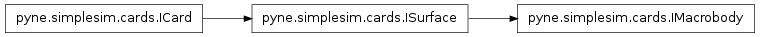
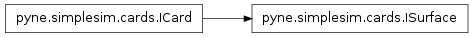

Cards Module – pyne.simplesim.cards¶
The cards module can be imported as such:
from pyne.simplesim import cards
The user creates cards, typically only working with the constructors, and then adds the cards to a pyne.simplesim.definition.IDefinition. The user can modify cards later on by modifying attributes after the card has been created.
The first section on this page, Index, list all the cards with their category. The second section is Reference, which contains the reference for all the classes. In the Reference, the classes are listed in alphabeticla order.
Index¶
This section presents a listing of the cell cards, with links to their reference, based on the category to which the cell cards belong. The categories are important because cards must have a unique name within their category.
An inheritance diagram of all the classes in this module can be found at Inheritance Diagrams. All cards are subclassed from ICard, which is not part of any of the categories below. The only exception is the Particle class, which is a helper class used whenever a particle must be specified as part of a card.
System cards¶
These are the cards that are provided in a pyne.simplesim.definition.SystemDefinition. See further down for more subcategories. Cell cards are added to a simulation using pyne.simplesim.definition.SystemDefinition.add_cell(), and cell card names must be unique among cell cards. Material cards are added using pyne.simplesim.definition.SystemDefinition.add_material(), and material card names must be unique among material cards.
Surface cards¶
Surface cards are added to a system using pyne.simplesim.definition.SystemDefinition.add_surface().
Macrobodies¶
These are surfaces built from simpler surfaces, and accordingly have (will have) facet functionality. These cards are still added via pyne.simplesim.definition.SystemDefinition.add_surface(), and so their names must be unique among the surfaces.
Region¶
Cells require a region, and regions are constructed using surfaces. These classes are used to form a binary tree. The & and | operators are overloaded to facilitate the construction of solid regions from surfaces. These cards can be named if so desired, but otherwise are not really part of a system like cell, surface, and material cards are.
Simulation cards¶
These are the cards that are provided in a pyne.simplesim.definition.SimulationDefinition. Some of the cards can only be used in subclasses of SimulationDefinition, such as Transformation.
The following two cars form their own categories, and are the only card in their respective category. Distributions are added to simulations using pyne.simplesim.definition.SimulationDefinition.add_dist(), and transformations are added using pyne.simplesim.definition.MCNPSimulation.add_transformation() (they are only available for MCNP simulations). Card names must be unique within their own category.
Source¶
These cards are used to define particle sources. Add these cards to a simulation using pyne.simplesim.definition.SimulationDefinition.add_source(). Card names must be unique among source cards.
Tally¶
Particle tallies/detectors. Add these cards to a simulation using pyne.simplesim.definition.SimulationDefinition.add_tally(). Card names must be unique among tally cards.
Miscellaneous¶
These cars do not have card numbers and do not fit into any other category. Add these cards to a simulation using pyne.simplesim.definition.SimulationDefinition.add_misc(). Card names must be unique among misc scards.
Custom cards¶
A custom card is used when other cards, within a given category, do not satisfy the needs of the user. They are added to the system or simulation using the add_* method for their category, and the names must be unique within their category.
Reference¶
All classes are listed in alphabetical order. Cards that are available in MCNP have their MCNP card name in the reference; feel free to search for it to find the related simplesim card.
- class pyne.simplesim.cards.Area(*args)[source]¶
Cell surface areas. Unique card with name area. In MCNP, this is the AREA card. The user can initialize this card without providing any cell areas.

Methods
Parameters : cell : str name of Cell or subclass
The name of the cell for which the area is being provided.
area : float [centimeters^2]
Surface area of the cell.
*args : cell, area, ...
To provide areas for more than one cell, suppy the last two arguments for the other cells. See examples. This can also be done using set().
Examples
The follow are examples of the usage of this card:
area = Area('cellA', 10) area = Area('cellA', 10, 'cellB', 20)
Methods
- set(cell, area)[source]¶
Add an entry or modify an existing one.
Parameters : cell : str name of Cell or subclass
area : float [centimeters^2]
Examples
The example above can be achieved by the following:
area = Area() area.set('cellA', 10) area.set('cellB', 20)
Previously provided values can be modified later on:
area.set('cellB', 30)
- class pyne.simplesim.cards.AxisCylinder(name, cartesian_axis, radius, **kwargs)[source]¶
Cylinder aligned with and centered on one of the Cartesian axes.

Methods
Parameters : name : str
See ICard.
cartesian_axis : str
The axis with which the cylinder is aligned and centered. See IAxisSurface.
radius : float [centimeters]
Radius of the cylinder.
reflecting : bool, optional
See ISurface
white : bool, optional
See ISurface
Examples
The following creates a cylinder aligned with the z axis, going through centered on the z axis, with a radius of 0.4 cm:
cyl = AxisCylinder('mycyl', 'z', 0.4)
Methods
- shift(vector)[source]¶
See ISurface.shift(). Axis cylinders can only be shifted along their axis, and even in such cases the shift has no effect. However, such a shift must be permitted in case this surface is part of a region that is being shifted.
Examples
The following is okay (where we have imported numpy as np):
cyl = AxisCylinder('mycyl', 'z', 0.4) cyl.shift([0, 0, 3]) cyl.shift(np.array([0, 0, 3]))
The following do not work:
cyl.shift([3, 0, 0]) cyl.shift([0, 3, 3])
- stretch(vector)[source]¶
See ISurface:stretch(). Axis cylinders can be stretched in the direction of their axis, which has no effect (permitted in case this surface is part of a region that is being stretched), or can be stretched uniformly in the plane perpendicular to its axis.
Examples
The following stretches are okay for a cylinder aligned with the x axis (where we have imported numpy as np):
cyl = AxisCylinder('mycyl', 'z', 0.4) cyl.stretch([0, 0, 2]) cyl.stretch([3, 3, 0]) cyl.stretch(np.array([3, 3, 2]))
However, the following would cause the cylinder to lose its circular cross section, which cannot be accommodated:
cyl.stretch([0, 3, 0]) cyl.stretch([2, 3, 1])
- class pyne.simplesim.cards.AxisPlane(name, cartesian_axis, position, **kwargs)[source]¶
Plane perpendicular to one of the Cartesian axes.

Methods
Parameters : name : str
See ICard.
cartesian_axis : str
The axis to which the plane is perpendicular. See IAxisSurface.
position : float [centimeters]
Position of the plane along cartesian_axis.
reflecting : bool, optional
See ISurface
white : bool, optional
See ISurface
Examples
The following creates a plane perpendicular to the x axis, 3 cm along the positive x axis with a reflecting boundary condition:
plane = AxisPlane('myplane', 'x', 3, reflecting=True)
Methods
- shift(vector)[source]¶
See ISurface.shift(). Axis planes can be shifted in any direction, but only shifts along their axis have an effect.
Examples
The following has the effect of shifting the plane’s position to x = 6 cm:
plane = AxisPlane('myplane', 'x', 3) plane.shift([3, 0, 0])
The following has no effect, but is allowed:
plane.shift([0, 3, 2])
- stretch(vector)[source]¶
See ISurface.stretch(). Axis planes can be stretched in any direction, but only stretches along their axis have an effect. The position of the plane is scaled by the stretch factor.
Examples
The following has the effect of moving the plane’s position to x = 9 cm:
plane = AxisPlane('myplane', 'x', 3) plane.stretch([3, 0, 0])
The following has no effect, but is allowed:
plane.stretch([0, 3, 2])
- class pyne.simplesim.cards.Burnup(times=None, power_fracs=None, power=None, materials=None, matl_omit=None, min_frac=None, chain_convergence=None, fp_tier=None, out_order=None, out_per_step=False, model_opt=None, volume=None, conc_change=None)[source]¶
Unimplemented.
Methods
- class pyne.simplesim.cards.Cell(name, region, material=None, density=None, density_units=None, universe=None, fill=None, lattice=None, *args, **kwargs)[source]¶
A cell is a region of space filled with a material. If requesting a void cell, the material, density, and density_units attributes are all set to None (as by default).
Methods
Parameters : name : str
See ICard.
region : Region subclass
Defines the region of space that this cell occupies (see Region).
material : pyne.simplesim.cards.Material, None for void
A material definition using the pyne.material module. For use here, the material’s name property must be set to something other than ‘’ and must be unique within the materials. See pyne.material.Material.
density : float, None for void
Density for the material, in units of density_units.
density_units : str, None for void
Either ‘g/cm^3’, or ‘atoms/b/cm’.
universe : 2-element tuple, optional
To make this cell part of a universe, provide the name of that universe. Universes are often composed of more than one cell, and so this name is likely to appear on other cell cars as well. Tuple contains:
- (str) name of universe
- (bool) True for truncating, False otherwise.
Refer to Universes for more information.
fill : str, or 4-element tuple, optional
The name of a universe with which to fill this cell. Typically, cells that are filled with a universe are void themselves. If tuple (only makes sense for lattice cells), it contains:
- 2-element list of x-index bounds ([], or [0, 0] for 1 row/col)
- 2-element list of y-index bounds ([], or [0, 0] for 1 row/col)
- 2-element list of z-index bounds ([], or [0, 0] for 1 row/col)
- 1-D, 2-D, or 3-D list of universe names, or None to use the real world universe. See examples.
lattice : str, optional
Makes this cell is a repeating lattice. Can be either ‘hexahedra’ for 6-sided elements or ‘hexagonal’ for 8-sided elements.
Examples
Suppose we have surface cards surfA and surfB, and material card matA. The following creates a void cell on the negative side of surfA and the positive side of surfB (see Region to learn how to create regions):
cellA = Cell('A', surfA.neg & surfB.pos)
The following cell is filled with matA:
cellB = Cell('B', surfA.neg & surfB.pos, matA, 10.0, 'g/cm^3') cellB = Cell('B', surfA.neg & surfB.pos, matA, 0.5, 'atoms/b/cm')
Note that if a material is specified, a density and density units must also be provided The following is not allowed:
cellB = Cell('B', surfA.neg & surfB.pos, matA) cellB = Cell('B', surfA.neg & surfB.pos, matA, density=1) cellB = Cell('B', surfA.neg & surfB.pos, matA, density_units='g/cm^3') cellB = Cell('B', surfA.neg & surfB.pos, density=1) cellB = Cell('B', surfA.neg & surfB.pos, density_units='g/cm^3')
The following creates a new universe, and places two cells in it:
cellC = Cell('C', surfA.neg & surfB.pos, matA, density=1, density_units='g/cm^3', universe=('unitcell', True)) cellD = Cell('D', surfC.neg, matC, density=2, density_units='g/cm^3', universe=('unitcell', False))
Note that the universe isn’t actually created until this card is added to a system:
sys = definition.SystemDefinition() sys.add_cell(cellD)
Now, we can create a cell filled with the ‘unitcell’ universe:
cellE = Cell('E', fill='unitcell')
If we had two universes ‘A’ and ‘B’, we could fill a finite lattice cell as follows:
# element (0, 0, 0) element (4, 0, 0) # / / univ_names = [['A', 'B', 'A', 'B', 'A'], ['B', 'A', 'B', 'A', 'B']] # ^ ^ # element (0, 1, 0) element (4, 1, 0) cellF = Cell('F', surfA.neg, lattice='hexahedra', fill=([0, 4], [0, 1], [], univ_names))
Here is an example for a 3-D finite lattice:
# (0, 0, -1) (2, 0, -1) # / / univ_names = [[['A', 'B', 'A'], ['B', 'A', 'B']], [['A', None, 'A'], ['B', 'A', 'B']]] # ^ ^ # (0, 1, 0) (2, 1, 0) # cellF = Cell('F', surfA.neg, lattice='hexahedra', fill=([0, 2], [0, 1], [-1, 0], univ_names))
Methods
- class pyne.simplesim.cards.CellChargeDeposition(name, particles, cards, **kwargs)[source]¶
Charge deposition tally in cells. In MCNP, this is the +F8 card. No alternative units are available.

Methods
Parameters : name : str
See ITally.
particles : str, list of str
See ITally. Multiple particles can be provided in a list of str. In MCNP, if only ‘proton’, or ‘electron’ is specified, both are automatically included.
cards : str name of Cell, OR pyne.simplesim.nestedgeom.IUnit, list, list of lists
See IAverageTally.
average : bool, optional
See IAverageTally.
Examples
The following requests the tally in cell ‘cA’ and cell ‘cB’ for both protons and electrons:
tally = CellChargeDeposition('fuel', ['proton', 'electron'], ['cA', 'cB'])
See base classes for more examples.
Methods
- class pyne.simplesim.cards.CellCustom(*args, **kwargs)[source]¶
Custom Cell card.

Methods
Parameters : name : str
Name of the card. Must be unique within the type of card.
comment : str, optional
A comment to be placed in the input file, if comments are requested.
mcnp : str, optional
The card to be printed in an MCNP input. Must be given for any card that will be used in generating an MCNP input. This excludes the card number, except for one case with tallies.
Examples
Except for materials, custom cards look like the following:
cust = SurfaceCustom('customsurf', comment='My Surface', mcnp='RPP ...')
Methods
- class pyne.simplesim.cards.CellEnergyDeposition(name, particles, cards, **kwargs)[source]¶
Energy deposition tally. In MCNP, this is the F6 card. In MCNP, it is not permitted to use a particle ‘all’ and also to use alternative units.

Methods
Parameters : name : str
See ITally.
particles : str, list of str
See ITally. For this tally, the user can specify the particle type as a list of strs to tally more than one type of particle. Also, the additional value of ‘all’ is allowed, and specifies collision heating. As may be expected, ‘all’ cannot be provided as part of a list.
cards : str name of Cell, OR pyne.simplesim.nestedgeom.IUnit, list, list of lists
See IAverageTally.
average : bool, optional
See IAverageTally.
alt_units : bool, optional
If True, alternative units are used for the tally. In MCNP, the default units are MeV/g and the alternative units are jerks/g. See ITally.
Examples
The following requests the energy deposited by neutrons in cell ‘cA’:
tally = CellEnergyDeposition('energy', 'neutron', 'cA')
The following requests the energy deposited by neutrons and protons in cell ‘cA’:
tally = CellEnergyDeposition('energy', ['neutron', 'proton'], 'cA')
The following requests the energy deposited by all particles in cell ‘cA’:
tally = CellEnergyDeposition('energy', 'all', 'cA')
The following are not allowed in MCNP:
tally = CellEnergyDeposition('energy', ['neutron', 'all'], 'cA') tally = CellEnergyDeposition('energy', 'all', 'cA', alt_units=True)
See base classes for more examples.
Methods
- class pyne.simplesim.cards.CellFissionEnergyDeposition(name, cards, **kwargs)[source]¶
Fission energy deposition tally. In MCNP, this is the F7 card. The particle is necessarily neutron.

Methods
Parameters : name : str
See ITally.
cards : str name of Cell, OR pyne.simplesim.nestedgeom.IUnit, list, list of lists
See IAverageTally.
average : bool, optional
See IAverageTally.
alt_units : bool, optional
If True, alternative units are used for the tally. In MCNP, the default units are MeV/g and the alternative units are jerks/g. See ITally.
Examples
The following requests the tally in cell ‘cA’, cell ‘cB’, as well as the average across ‘cA’ and ‘cB’:
tally = CellFissionEnergyDeposition('fuel', ['cA', 'cB'], average=True)
In the following, the alternate units are used:
tally = CellFissionEnergyDeposition('fuel', [['cA', 'cB']], alt_units=True)
See base classes for more examples.
Methods
- class pyne.simplesim.cards.CellFlux(name, particle, cards, **kwargs)[source]¶
Cell flux tally. In MCNP, this is the F4 card.

Methods
Parameters : name : str
See ITally.
particle : str
See ITally.
cards : str name of Cell, OR pyne.simplesim.nestedgeom.IUnit, list, list of lists
See IAverageTally.
average : bool, optional
See IAverageTally.
alt_units : bool, optional
If True, Tally is additionally weighted by particle energy. See ITally.
Examples
The following requests the tally in cell ‘cA’, cell ‘cB’, as well as the average across ‘cA’ and ‘cB’:
tally = CellFlux('fuel', 'electron', ['cA', 'cB'], average=True)
In the following, the tally is also weighted by particle energy:
tally = CellFlux('fuel', 'proton', [['cA', 'cB']], alt_units=True)
See base classes for more examples.
Methods
- class pyne.simplesim.cards.CellMCNP(name, region, material=None, density=None, density_units=None, temperature=None, volume=None, importance=None, exp_transform=None, forced_coll=None, weight_win_bound=None, dxtran_contrib=None, photon_weight=None, fission_turnoff=None, det_contrib=None, transformation=None, user_custom=None, **kwargs)[source]¶
A cell card with keyword options that are available in MCNP. Thus, it only makes sense to use this card if writing an input for MCNP. A number of the keyword arguments are for a particular particle. The particles available are given in Particle. The user provides the full name of the particle, as given as keys in Particle.mcnp_abbrev. The card will then use the appropriate particle designator when writing the card.
See Cell for universes, fill, and lattices.
Note this card was written with MCNPX version 2.7 in mind.
Methods
Parameters : name : str
See ICard.
region : Region
See Cell.
material : pyne.simplesim.cards.Material, None for void
See Cell.
density : float, None for void
See Cell.
density_units : str, None for void
See Cell.
temperature : float, otional [Kelvin]
Temperature of the cell for thermal treatment, Temperature, TMP.
volume : float, optional [cm^3]
Volume of the cell, Volume, VOL.
importance : 2-element tuple, or list of tuples, optional
Particle importance, Importance, IMP. The tuple contains:
- (str) particle name (see Particle)
- (int) the importance
Refer to Importance for more information. To specify this input for more than one particle, provide a list of these tuples.
exp_transform : 4-element tuple, or list of tuples, optional
An exponential transform, ExponentialTransform, EXT. The tuple contains:
- (str) particle name (see Particle)
- (str/float) stretch
- (str) direction
- (str) sign (‘toward’, ‘away’)
Refer to ExponentialTransform for the form of these inputs. To specify this input for more than one particle, provide a list of these tuples.
forced_coll : 3-element tuple, or list of tuples, optional
Forced collisions, ForcedCollision, FCL. The tuple contains:
- (str) particle name (see Particle)
- (float) probability
- (bool) only entering the cell triggers forced collision
Refer to ForcedCollision for the form of these inputs. To specify this input for more than one particle, provide a list of these tuples.
weight_win_bound : 4-element tuple, or list of tuples, optional
Weight window lower bound, WeightWindowBound, WWN. The tuple contains:
- (str) particle name (see Particle)
- (int) energy index
- (int) time index
- (float/str) lower bound, or ‘killall’
Refer to WeightWindowBound for the form of these inputs. To specify this input for more than one particle, or energy/time index, provide a list of these tuples.
dxtran_contrib : 3-element tuple, or list of tuples, optional
Probability of contribution to a DXTRAN sphere, DXTRANContribution, DXC. The tuple contains:
- (str) particle name (see Particle)
- (str/None) DXTRAN sphere name (None for all spheres)
- (float) probabilility of contribution
Refer to DXTRANContribution for the form of these inputs. To specify this input for more than one particle or DXTRAN sphere, provide a list of these tuples.
photon_weight : 2-element tuple, or list of tuples, optional
Threshold weight of photons that are produced at neutron collisions, PhotonWeight, PWT. The tuple contains:
- (str/float) ‘off’, ‘one’, or weight threshold parameter
- (bool) pre_weight; relevant is 1st element is float (optional)
Refer to PhotonWeight.set() for the form of these inputs.
fission_turnoff : str, optional
Fission turnoff, FissionTurnoff, NONU. The allowed values are: ‘capture-gamma’, ‘real-gamma’, and ‘capture-nogamma’. Refer to FissionTurnoff() for more information.
det_contrib : tuple of str and float, optional
Detector contribution, DetectorContribution, PD. The tuple contains:
- (str) name of IDetector tally obtaining contribution from this cell
- (float) probability of contribution
Refer to DetectorContribution() for the form of these inputs. To specify this input for more than one tally, provide a list of these tuples.
transformation : str or 4-element tuple, optional
Cell transformation, TRCL. If str, it is the name of a Transformation card. If tuple, it contains:
- (list/np.array) displacement vector
- (3 x 3 list/np.array/np.matrix) rotation matrix
- (bool) If True, ‘aux-in-main’, else ‘main-in-aux’ (optional)
- (bool) Rotation in degrees if True, in cosines if False (optional)
Refer to Transformation for the form of these inputs and the default values for the optional arguments.
user_custom : str, optional
This string is appended to the end of the MCNP card. It is possible that the user will want to append a string to the end of the MCNP card, given the limited support of keyword arguments. This is perhaps most useful if the user wants to specify a keyword for a particle that is not supported by any of the keyword arguments above.
Examples
The following sets the temperature of the cell to 600 K, its volume to 1.5 cm^3, and the neutron impotartance to 1.:
cellA = CellMCNP('A', surfA.neg & surfB.pos, matA, 10.0, 'g/cm^3', temperature=600, volume=1, importance=('neutron', 1))
The following sets the neutron importance to 1 and the photon importance to 0:
cellA = CellMCNP('A', surfA.neg & surfB.pos, matA, 10.0, 'g/cm^3', importance=[('neutron', 1), ('photon', 0)])
The following sets an exponential transform for neutrons with stretch ‘capture-to-total’ toward the current direction of travel of the particle, and a differente transform for photons:
cellA = CellMCNP(..., exp_transform=[ ('neutron', 'capture-to-total', 'currdir', 'toward'), ('photon', 0.5, 'x', 'away')])
The direction can be the name of a vector (e.g. vec1) on the Vector card, as long as the Vector has been added to the simulation before an input is generated:
cellA = CellMCNP(..., exp_transform=('neutron', 0.5, 'vec1', 'away')) vec = Vector() vec.set('vec1', [0, 0, 0])
We can request forced collision for neutrons that enter the cell and as part of weight games:
cellA = CellMCNP(..., forced_coll=('neutron', 0.5, False))
The following specifies the lower bound for neutrons at energy index, 3, time index 1 (assuming that the WeightWindowEnergies card is in the simulation):
cellA = CellMCNP(..., weight_win_bound=('neutron', 3, 1, 'killall'))
The following specifies the probability that neutrons from this cell will tally in DXTRAN sphere ‘sph1’ (assuming a sphere with this name will be in the simulation, on the DXTRANSpheres card):
cellA = CellMCNP(..., dxtran_contrib=('neutron', 'det1', 0.5)) sim = definition.MCNPDefinition(...) det1 = PointDetector('det1', ...) sim.add_tally(det1)
Here are two examples of specifying a photon weight threshold (the bool can be provided if the first element is a float, but defaults to False otherwise):
cellA = CellMCNP(..., photon_weight=('one',)) cellA = CellMCNP(..., photon_weight=(0.5,)) cellA = CellMCNP(..., photon_weight=(0.5, True))
The following turns off fission in this cell, but still requests that gammas are generated by fission interactions:
cellA = CellMCNP(..., fission_turnoff='capture-gamma')
The following specifies the probability that this cell contributes to detector det1, which must be in the simulation:
cellA = CellMCNP(..., det_contrib=('det1', 0.5))
A transformation can be provided by referring to a Transformation card:
cellA = CellMCNP(..., transformation='transA') transA = Transformation('transA', ...) sim = definition.MCNPSimulation(...) sim.add_transformation(transA)
Alternatively, a transformation can be specified right on the keyword. Here we have used the default values for the last two inputs:
cellA = CellMCNP(..., transformation=([1, 0, 0], np.eye(3))
Here, we want to change the 4th element from its default, value, so we must specify the 3rd element even though it has its default value:
cellA = CellMCNP(..., transformation=([1, 0, 0], np.eye(3), True, True))
If the user wants to supply an exponential transform keyword, with a transform of ‘0.7V2’, on their own, they can do the following:
cellA = CellMCNP('A', surfA.neg & surfB.pos, matA, 10.0, 'g/cm^3', importance=[('neutron', 1), ('photon', 0)], user_custom='EXT:N 0.7V2')
and the user_custom string will be printed at the end of the cell card.
See Cell for more examples.
Methods
- class pyne.simplesim.cards.CellPulseHeight(name, particles, cards, **kwargs)[source]¶
Pulse height tally in cells. In MCNP, this is the F8 card. For a charge deposition tally, see CellChargeDeposition.

Methods
Parameters : name : str
See ITally.
particles : str, list of str
See ITally. Multiple particles can be provided in a list of str. In MCNP, if only ‘proton’, or ‘electron’ is specified, both are automatically included.
cards : str name of Cell, OR pyne.simplesim.nestedgeom.IUnit, list, list of lists
See IAverageTally.
average : bool, optional
See IAverageTally.
alt_units : bool, optional
If True, alternative units are used for the tally. In MCNP, the default units are pulses and the alternative units are MeV. See ITally.
Examples
The following requests the tally in cell ‘cA’ and cell ‘cB’ for both protons and electrons, and requests units of MeV:
tally = CellPulseHeight('fuel', ['proton', 'electron'], ['cA', 'cB'], alt_units=True)
See base classes for more examples.
Methods
- class pyne.simplesim.cards.Criticality(n_histories=1000, keff_guess=1.0, n_skip_cycles=30, n_cycles=130)[source]¶
A criticality source of neutrons. Unique card with name criticality. In MCNP, this is the KCODE card.

Methods
Parameters : n_histories : int, optional
Number of particle histories to run in each cycle.
keff_guess : float, optional
Initial guess for the effective multiplication constant of the system.
n_skip_cycles : int, optional
The number of cycles to skip.
n_cycles : int, optional
The total number of cycles to simulate (skipped + active).
Examples
The following:
critsrc = Criticality(2000, 1.5, 30, 300)
creates a criticality source with 2000 histories per cycle, an initial k_eff guess of 1.5, 30 skipped cyles, and 300 total cycles.
Methods
- class pyne.simplesim.cards.CriticalityPoints(points=[[0, 0, 0]])[source]¶
Initial source points for neutrons generated by a criticality source. Unique card with name ‘criticalitypoints’. In MCNP, this is the KSRC card.

Methods
Parameters : points : list of 3-element lists, optional [centimeters]
A list of 3-element lists (or numpy arrays) specifying initial neutron source points in 3-D space.
Examples
The following specifies two initial source points at (1, 2, 3) cm and at (3.141..., 2.718..., 0) cm, where we have imported numpy as np:
critpts = CriticalityPoints([[1, 2, 3], np.array([np.pi, np.e, 0])])
Methods
- class pyne.simplesim.cards.Cuboid(*args, **kwargs)[source]¶
Same exact thing as a Parallelepiped. This class is provided because the name is shorter, and thus may be preferred by those who fancy brevity.
Methods
- class pyne.simplesim.cards.Custom(*args, **kwargs)[source]¶
Allows the user to specify a custom card. It is logical for this class, in the future, to have attributes like serpent.
Methods
Parameters : name : str
Name of the card. Must be unique within the type of card.
comment : str, optional
A comment to be placed in the input file, if comments are requested.
mcnp : str, optional
The card to be printed in an MCNP input. Must be given for any card that will be used in generating an MCNP input. This excludes the card number, except for one case with tallies.
Examples
Except for materials, custom cards look like the following:
cust = SurfaceCustom('customsurf', comment='My Surface', mcnp='RPP ...')
Methods
- class pyne.simplesim.cards.DXTRANContribution(particle, sph_name, *args)[source]¶
Contribution probabilities to DXTRAN sphere by cells. Unique card for a given particle type and DXTRAN sphere, with name dxtrancont-<sph_name>-<particle> (or more simply dxtrancont-<particle> if input applies for all spheres). In MCNP, this is the DXC card.

Methods
Parameters : particle : str
See ICellMod.
sph_name : str or None
Name of the DXTRAN sphere, on the DXTRANSpheres card, for which this card applies. To apply this card to all spheres, set to None.
cell : str name of Cell or subclass
See ICellMod.
prob : float
The probability of contribution to the sphere.
Examples
The following shows how this card is used to specify contribution probabilities for all DXTRAN spheres:
dxc = DXTRANContribution('neutron', None, 'cellA', 0.5)
The following applies for only ‘sph1’ on the DXTRANSpheres card:
dxc = DXTRANContribution('neutron', 'sph1', 'cellA', 0.5)
The following provides probabilities for two different cells:
dxc = DXTRANContribution('neutron', 'sph1', 'cellA', 0.5, 'cellB', 0.75)
Methods
- set(cell, prob)[source]¶
Add an entry or modify an existing one.
Parameters : cell : str name of Cell or subclass
prob : float
Examples
The following shows how this card can be constructed using this method:
dxc = DXTRANContribution('neutron', 'sph1') dxc.set('cellA', 0.5) dxc.set('cellB', 0.75)
Previously provided values can be modified later on:
dxc.set('cellB', 0.8)
- class pyne.simplesim.cards.DXTRANSpheres(particle, *args, **kwargs)[source]¶
DXTRAN spheres. Unique card for a given particle type, with name dixtranspheres-<particle>. In MCNP, this is the DXT card. See the code’s (e.g. MCNP’s) manual for default values. All the spheres added to this card are named so that they can be referenced by other cards.

Methods
Parameters : particle : str
See IUniqueParticle.
sph_name : str
Name of the sphere.
center : 3-element list or np.array [centimeters]
Center of this sphere.
inner_radius : float [centimeters]
Inner radius of this sphere.
outer_radius : float [centimeters]
Outer radius of this sphere.
*args : sph_name, point, inner_radius, outer_radius, ...
To request more than one sphere, supply the last 4 arguments for the additional spheres. See examples. This can also be done using set().
upper_cutoff : float, optional
Upper weight cutoff, for all spheres.
lower_cutoff : float, optional
Lower weight cutoff, for all spheres.
min_photon_weight : float, optional
Only relevant if this card is for neutrons.
Examples
The following requests a DXTRAN sphere sph1 at (1, 2, 3) cm, with inner radius 4 cm and outer radius 5 cm:
dsph = DXTRANSpheres('neutron', 'sph1', [1, 2, 3], 4, 5)
It is possible to define multiple spheres in the constructor; keyword arguments come after the sphere parameters:
dsph = DXTRANSpheres('neutron', 'sph1', [1, 2, 3], 4, 5, 'sph2', [4, 5, 6], 7, 8, upper_cutoff=0.1, lower_cutoff=0.05, min_photon_weight=0.5)
Methods
- class Sphere¶
Named tuple with which input entries are stored.
Methods
- center¶
Alias for field number 1
- inrad¶
Alias for field number 2
- name¶
Alias for field number 0
- outrad¶
Alias for field number 3
- DXTRANSpheres.set(sph_name, center, inner_radius, outer_radius)[source]¶
Add an entry or modify an existing one.
Parameters : sph_name : str
Name of the sphere.
center : 3-element list or np.array [centimeters]
Center of this sphere.
inner_radius : float [centimeters]
Inner radius of this sphere.
outer_radius : float [centimeters]
Examples
The last example above can be achieved as follows:
dsph = DXTRANSpheres('neutron', upper_cutoff=0.1, lower_cutoff=0.05, min_photon_weight=0.5) dsph.set('sph1', [1, 2, 3], 4, 5) dsph.set('sph2', [4, 5, 6], 7, 8)
Previously provided values can be modified later on:
dsph.set('sph2', [4.5, 5.5, 6.5], 8.5, 9.5)
- class pyne.simplesim.cards.DetectorContribution(det_name, *args)[source]¶
Probability of contribution of cell to a detector. Unique card with name detcontrib-<detname>. In MCNP, this is the PD card.

Methods
Parameters : det_name : str
Name of the detector (subclass of IDetector) for which this card stores probabilities of contribution.
cell : str name of Cell or subclass
The name of the cell for which the probability of contribution is being provided.
prob : float
Probability that this cell contributes to this detector.
*args : cell, prob, ...
To provide probabilities for more than one cell, supply the last two arguments for the other cells. See examples. This can also be done using set().
Examples
Suppose a cell ‘cellA’ and a detector ‘det1’ have been defined and are in the simulation. Then, we can do the following:
dc = DetectorContribution('det1', 'cellA', 0.5)
or, if we also have a ‘cellB’:
dc = DetectorContribution(‘det1’, ‘cellA’, 0.5, ‘cellB’, 0.6)Methods
- set(cell, prob)[source]¶
Add an entry or modify an existing one.
Parameters : cell : str name of Cell or subclass
prob : float
Examples
The last example above can be achieved by the following:
dc = DetectorContribution('det1') dc.set(cellA, 0.5) dc.set('cellB', 0.6)
Previously provided values can be modified later on:
dc.set('cellB', 0.7)
- class pyne.simplesim.cards.Distribution(name, keys, vals, key_setting=None, val_setting=None, **kwargs)[source]¶
A distribution used in conjunction with source variables on the GeneralSource card. The value of a source variable can be sampled from a distribution, described by this class. Distributions are added to a simulation using definition.MCNPSimulation.add_dist. In MCNP, this card is implemented with a pair of SI and SP cards.
Limititations:
- Embedded sources are not supported; to use this the user must provide an explicit string for keys.
- In MCNP, particles also have a number associated with them. It is necessary to use those numbers, instead of the abbreviations like ‘N’ or ‘H’ (see Particle.mcnp_abbrev), to avoid conflict with the key settings. Specifying a particle name like ‘proton’ will not cause this code to find the particle number, but in such cases the user can provide the particle number on their own. Alternatively, the user can provide their keys input explicitly as a string .
- Particles that are heavy ions are not supported through pyne.nucname, but the user can provide the ZAID integer as part of the keys list
Methods
The keys are the independent variable in the distribution, and the vals are probability values for the independent variable.
Parameters : name : str
See ICard. Used to reference this card from the GeneralSource card.
key_setting : str, optional
Specifies what the keys represent. The following settings are allowed:
- ‘histogram’: bin upper boundaries. H in MCNP.
- ‘discrete’: source variable values. L in MCNP.
- ‘pdf_indep’: independent variable for probability density function. A in MCNP.
- ‘dist’: names of other distributions. S in MCNP.
- ‘analytic’: vals contains the parameters of a built-in analytic probability density function, and the function is determined by the key_setting. In this case, keys must be an empty list [] or list(), or the bounds of the domain for the function.
val_setting : str, optional
Specifies what the values represent. The following settings are allowed:
‘prob’: bin probabilities. ** D** in MCNP.
‘cumprob’: cumulative bin probabilities. C in MCNP.
‘propvol’: probability proportional to cell vol. V in MCNP.
‘partint’: intensities of particle sources. Values can be the name of a cell for spontaneous fission or spontaneous photon sources. W in MCNP.
if key_setting == ‘analytic’, this value is one of the following, with parameters specified in a list on vals:
- ‘maxwell’: 1 parameter
- ‘watt’: 2 parameters
- ‘gauss’: 2 parameters
- ‘evap’: 1 parameter
- ‘muir’: 2 parameters
- ‘exp_decay’: 1 parameter
- ‘power’: 1 parameter
- ‘exp’: 1 parameter
- ‘gauss_beam’: 2 parameters
All the analytic parameters have defaults, and the defaults can be invoked if vals is an empty list. See MCNP manual for more information.
keys : list, str
If a string, the string is printed after the key_setting, if provided. A string is used if the class does not provide the desired functionality, and the user wants to provide their own input. If a list, elements can be:
- particle names (keys of Particle.mcnp_abbrev),
- ‘spont-fiss-by-neut’, ‘spont-fiss-by-hist’, ‘spont-phot’,
- a 3-element list or np.array,
- the name of another Distribution, or
- anything else.
The list should be as long as vals, unless key_setting is analytic, in which case it is an empty list or the bounds of the domain of the analytic function.
vals : list, str
If a string, the string is printed after the val_setting, if provided. A string is used if the class does not provide the desired functionality, and the user wants to provide their own input. If a list, elements can be:
- cell name,
- analytic function parameters, or
- anything else (a normal bin probability).
The list should be as long as keys, unless key_setting is ‘analytic’, in which case the list contains the 1 or 2 parameters for the analytic function, or can be an empty list to use the default parameters.
Examples
The following might be used for the x source variable:
sd = Distribution('distA', [-2, 2], [0, 1]) sd = Distribution('distA', [-2, 2], [0, 1], 'histogram', 'prob')
The following specifies multiple particle types and their intensities, also showing how a cell name can be provided as an intensity value, and a heavy ion can be specified:
sd = Distribution('distA', ['neutron', 'photon', 'spont-fiss-by-neut', 92238], [1, 1, 'cellA', 2], key_setting='discrete', val_setting='partint')
The names of other distributions can be provided as well. It is assumed in this example that ‘distB’ and ‘distC’ are the names of Distribution‘s that will be added to the simulation before an input is created:
sd = Distribution('distA', ['distB', 'distC'], [0.3, 0.7], 'dist')
The following two commands specify an unbounded analytic distribution using the default parameters:
sd = Distribution('distA', [], [], 'analytic', 'maxwell') sd = Distribution('distA', [], [], key_setting='analytic', val_setting='maxwell')
The following is a bounded analytic distribution, with parameters specified:
sd = Distribution('distA', [0, 10], [1, 3], 'analytic', 'watt')
Methods
- class pyne.simplesim.cards.DistributionCustom(*args, **kwargs)[source]¶
Custom Distribution card.

Methods
Parameters : name : str
See Custom.
comment : str, optional
See Custom.
mcnp : list of 2-element tuples, optional
Unlike with Custom, this is a list of 2-element tuples, since a distribution in MCNP is done with a number of cards (i.e. SI, SP, SB).
Examples
The following is expected:
dc = DistributionCustom('disti', comment='My dist.', mcnp=[('SP', 'prob string')]) dc = DistributionCustom('disti', comment='My dist.', mcnp=[('SI', 'info string'), ('SP', 'prob string')])
Methods
- class pyne.simplesim.cards.EnergyGrid(name, tally, energies)[source]¶
Energy grid for tallies. In MCNP, this is the E card.
Methods
Parameters : name : str
See ICard.
tally : str name of ITally, None
The name of the tally for which this energy grid should apply. If requesting for this grid to apply to all tallies, then this is None.
energies : list, np.array
The upper bounds of the energy groups.
Examples
The following energy grid applies to all tallies:
egrid = EnergyGrid('grid0', None, [1e-4, 1, 100e3, 10e6])
The following applies to tally ‘tallyA’:
egrid = EnergyGrid('grid0', 'tallyA', np.array([1e-4, 1, 100e3, 10e6]))
Methods
- class pyne.simplesim.cards.ExponentialTransform(particle, *args)[source]¶
An exponential transform that adjusts the total cross section by a given factor in a given direction. Unique card for a given particle type, with name exptransform-<particle>. In MCNP, this is the EXT card. The user can initialize this card without requesting any exponential transforms.

Methods
Parameters : particle : str
See ICellMod.
cell : str name of Cell or subclass
See ICellMod.
stretch : str or float
The stretch factor. If ‘capture-to-total’, the stretch factor is the ratio of the capture cross section to the total cross section (referred to as Sigma_a in the MCNP manual). Otherwise, the factor is a number between 0 and 1.
direction : str
If ‘currdir’ then the stretching is done in the particle’s direction of travel. If ‘x’, ‘X’, ‘y’, ‘Y’, or ‘z’, ‘Z’, the stretching is with respect to the requested axis. Otherwise, it is the name of a vector on the Vector card.
sign : str
If ‘toward’, the stretching is done toward the direction requested. If ‘away’, the stretching is done away from the direction requested.
*args : cell, stretch, direction, sign...
To request an exponential transform for more than one cell, supply the last four arguments for the additional cells. See examples. This can also be done using set().
Examples
Consider cell ‘cellA’. The following requests a transformation that stretches by the ratio of the capture cross section to the total cross section, in the direction of the particle’s travel. The name of the card will be exptransform-neutron:
extn = ExponentialTransform('neutron', 'cellA', 'capture-to-total', 'currdir', 'toward') assert extn.name == 'exptransform-neutron'
The following requests a transformation that stretches by a factor of 0.5 in the direction of the particle’s travel:
extn = ExponentialTransform('neutron', 'cellA', 0.5, 'currdir', 'toward')
The following requests a transformation with respect to the x axis:
extn = ExponentialTransform('neutron', 'cellA', 0.5, 'x', 'toward')
The following requests a transformation away from the origin:
extn = ExponentialTransform('neutron', 'cellA', 0.5, 'vec1', 'away')
where somewhere else the user has added:
vec = Vector() vec.set('vec1', [0, 0, 0])
to the simulation. If the user wants to request an exponential transform for cells ‘cellB’ and ‘cellC’ as well, they can do the following:
extn = ExponentialTransform('neutron', 'cellA', 'capture-to-total', 'currdir', 'toward', 'cellB', 0.5, 'currdir', 'toward', 'cellC', 0.5, 'vec1', 'away')
Methods
- set(cell, stretch, direction, sign)[source]¶
The user can add additional transforms, for additional cells, or modify existing values using this method. See above for a description of the input.
Parameters : cell : str name of Cell or subclass
stretch : str or float
direction : str
sign : str
Examples
The last example above can also be achieved by the following, assuming cell cards ‘cellA’, ‘cellB’ and ‘cellC’ have been created:
extn = ExponentialTransform('neutron') extn.set('cellA', 'capture-to-total', 'currdir', 'toward') extn.set('cellB', 0.5, 'currdir', 'toward') extn.set('cellC', 0.5, 'vec1', 'away')
Previously provided values can be modified later on:
extn.set('cellC', 0.7, 'vec1', 'away')
- class pyne.simplesim.cards.Facet(macrobody, descriptor, number)[source]¶
Used in conjunction with macrobodies. See pyne.simplesim.definition.SystemDefinition.surface_num() to see how the appropriate surface number is obtained. The name of the surface is the same as that of the macrobody.
Methods
The user does not use this constructor. The user creates facets using IMacrobody.facet().
Methods
- class pyne.simplesim.cards.Fill(*args)[source]¶
Allows the user to fill certain cells with a universe or lattice. Unique card with name fill. In MCNP, this is the FILL card. The user can initialize this card without providing any inputs.

Limitations:
- Combining transformations with the fill is not supported.
Methods
Parameters : cell : str name of Cell or subclass
The name of the cell being filled by a universe.
univ_name : str
The name of the universe filling this cell.
*args : cell, univ_name, ...
To fill more than one cell, supply the last 2 arguments for the other cells. See examples. This can also be done using set().
Examples
If ‘unit’ and ‘cellB’ are names of cells and ‘unitcell’ and ‘otheruniv` are the names of universes, the user can do the following:
fill = Fill('unit', 'unitcell', 'cellB', 'otheruniv')
Methods
- class pyne.simplesim.cards.FissionTurnoff(*args)[source]¶
Fission turnoff options. Unique card with name fissionturnoff. In MCNP, this is the NONU card. If no arguments are provided, then the setting of ‘capture-gamma’ is applied to all cells.

Methods
Parameters : cell : str name of Cell or subclass
The name of the cell for which input is provided.
setting : str
One of the following 3 strings: ‘capture-gamma’ to request fissions to count as capture, but still cause gamma radiation; ‘real-gamma’ for fission to actually occur and to also produce gamma radiation; and ‘capture-nogamma’ for fission to be counted as capture, and to not release gammas.
*args : cell, setting, ...
To provide a setting for more than one cell, supply the last two arguments for the other cells. See examples. This can also be done using set().
Examples
The following sets all cells to the ‘capture-gamma’ setting:
fto = FissionTurnoff()
The followings specifies settings for more than one cell:
fto = FissionTurnoff('cellA', 'real-gamma', 'cellB', 'capture-nogamma')
Methods
- set(cell, setting)[source]¶
Add an entry or modify an existing one.
Parameters : cell : str name of Cell or subclass
setting : str
Examples
The example above can be achieved by the following:
fto = FissionTurnoff() fto.set('cellA', 'real-gamma') fto.set('cellB', 'capture-nogamma')
Previously provided values can be modified later on:
fto.set('cellB', 'real-gamma')
- class pyne.simplesim.cards.ForcedCollision(particle, *args)[source]¶
A forced collision setting. Unique card for a given particle type, with name forcedcoll-<particle>. In MCNP, this is the FCL card. The user can initialize this card without requesting forced collisions.

Methods
Parameters : particle : str
See ICellMod.
cell : str name of Cell or subclass
See ICellMod.
prob : float
If ‘none’, there is no forced collision for this cell. If float (between 0 and 1), it is the survival probability as described in the MCNP manual.
only_entering : bool
If True, the card applies only to particles entering the cell. If False, the card applies to particles entering as well as those surviving weight games in the cell.
*args : cell, prob, only_entering, ...
To request forced collision for more than one cell, supply the last three arguments for the additional cells. See examples. This can also be done using set().
Examples
The following cards request forced collisions with neutrons in the cell defined by cell card ‘cellA’:
fcl = ForcedCollision('neutron', 'cellA', 0.5, True) fcl = ForcedCollision('neutron', 'cellA', 0.5, False)
If the user wants to request forced collisions for ‘cellB’ as well, they can do the following:
fcl = ForcedCollision('neutron', 'cellA', 0.5, True, 'cellB', 0.5, False)
Methods
- set(cell, prob, only_entering)[source]¶
The user can add additional forced collision probabilities, for additional cells, or modify existing data, using this method. See above for a description of the input.
Parameters : cell : str name of Cell or subclass
prob : float
only_entering : bool
Examples
The last example above can also be achieved by the following:
fcl = ForcedCollision('neutron') fcl.set('cellA', 0.5, True) fcl.set('cellB', 0.5, False)
Previously provided values can be modified later on:
fcl.set('cellB', 0.7, False)
- class pyne.simplesim.cards.GeneralSource(**keyword_args)[source]¶
A general source. Unique with name gensource. In MCNP, this is the SDEF card. See the respective code (e.g. MCNP) for the default behavior of the arguments. Note that the x, y, and z coordinates of the source are separate inputs because they might each be on their own distributions. To learn about Python keyword arguments, visit the Python docs. Each keyword argument is also an attribute of this class, and can be modified individually after the card is created:
src = GeneralSource() src.cell = 'fuel'
A source is added to a simulation as follows:
sys = definition.SystemDefinition() ... sim = definition.MCNPSimulation(sys) sim.add_source(src)
Limitations:
- Keyword cannot depend on other keywords, as they can in MCNP.
Methods
Parameters : particle : str, int, Distribution name, optional (default: None)
Name of a particle, ‘spont-fiss-by-neut’, ‘spont-fiss-by-hist’, or ‘spont-phot’, integer to specify a heavy ion ZAID, or the name of a Distribution card. If the string is the name of a distribution in the simulation, then that distribution is used, and the other possible inputs are ignored. Therefore, be careful with how distribution cards are name.
cell : str, Distribution name, optional (default: None)
Name of a cell in which the source exists, or the name of a Distribution. If both a cell and distribution have the same card name (ambiguous input), an exception is raised. CEL in MCNP.
surface : str, Distribution name, optional (default: None)
Name of a surface, or the name of a Surface. If both a surface and a distribution have the same card name (ambiguous input), an exception is raised. SUR in MCNP.
energy : float, Distribution name, optional (default: None) [MeV]
Particle energy, or a distribution of energies. ERG in MCNP.
time : float, Distribution name, (default: None) [seconds]
Time at which the source particles are created, or a distribution of times. TME in MCNP.
ref_dir : 3-element list, optional (default: None)
Reference vector for sampling particle’s direction of travel. VEC in MCNP.
cosine : float, Distribution name, optional (default: None)
Cosine of the angle between the reference vector ref_dir and the particle’s direction of travel, or distribution. DIR in MCNP. DIR in MCNP.
normal_sign : str, optional (default: None)
‘pos’ for a positive surface normal, ‘neg’ for a negative surface normal. NRM in MCNP.
ref_pos : 3-element list, Distribution name, optional (default: None) [cm]
Reference point for position sampling. POS in MCNP, or distribution. For cylinders, it is the point at the center of the base of the cylinder.
offset : float, Distribution name, optional (default: None) [cm]
EXT in MCNP. Meaning varies, or distribution. For cylinders, it is the length of the cylinder.
radius : float, Distribution name, optional (default: None) [cm]
Radial distance of sampled points from ref_pos or axis, or distribution. RAD in MCNP. For cylinders, it is the radius of the cylinder.
axis : 3-element list, Distribution name, optional (default: None)
Reference vector or distribution for use in conjunction with offset and radius. AXS in MCNP. For cylinders, it is the axis of the cylinder.
x : float, Distribution name, optional (default: None) [cm]
x-coordinate or distribution for source position sampling. X in MCNP.
y : float, Distribution name, optional (default: None) [cm]
y-coordinate or distribution for source position sampling. Y in MCNP.
z : float, Distribution name, optional (default: None) [cm]
z-coordinate or distribution for source position sampling. Z in MCNP.
cookie_cutter : str, Distribution name, optional (default: None)
Name of a cell to use as cookie-cutter, or distribution Be wary of naming cells and distributions with the same name. CCC in MCNP.
area : float, optional (default: None) [cm^2]
Area of the surface, if this is a surface source. ARA in MCNP.
weight : float, optional (default: None)
Explicit particle weight. WGT in MCNP.
transformation : str, optional (default: None)
Name of a Transformation in the simulation.
eff : float, optional (default: None)
EFF in MCNP. Explicit value. See MCNP manual.
beam_emit : 3-element tuple, optional (default: None)
BEM in MCNP. The tuple contains:
- parameter for x coordinate [pi-cm-rad]
- parameter for y coordinate [pi-cm-rad]
- distance [cm]
See MCNP manual.
beam_aper : 2-element tuple, optional
BAP in MCNP. The tuple contains:
- parameter for x [cm]
- parameter for y [cm]
See MCNP manual.
user_custom : str, optional
Appended to the end of mcnp() output. The user can use this to account for functionality that is not otherwise provided by this class.
Examples
The following creates the default source:
gs = GeneralSource()
The following creates a photon source in cell ‘cellA’:
gs = GeneralSource(particle='photon', cell='cellA')
The cookie-cutter input operates the same way as the cell input. The following uses a Distribution for both the particle and the cell, assuming that the user has created distributions with the names ‘partdist’ and ‘celldist’, and that there is no cell with the name ‘celldist’:
gs = GeneralSource(particle='partdist', cell='celldist')
Surfaces work the same way as cells. The following shows the specification of energies from a distribution, as well as a time:
gs = GeneralSource(energy='energydist', time=2e10)
The following shows the specification of a reference direction and the cosine from that reference vector:
gs = GeneralSource(ref_dir=[1, 0, 0], cosine=0.5)
The following shows how a distribution for x, y, and z can be requested (make sure to add the distributions to the simulation):
gs = GeneralSource(x='xdist', y='ydist', z='zdist') xd = Distribution('xdist', [0, 10], [0, 1]) yd = Distribution('ydist', [-5, 5], [0, 1]) zd = Distribution('zdist', [0, 1], [0, 1])
The following shows how a transformation can be applied to the source (assuming the transformation is added to the simulation):
tr = Transformation('source', ...) gs = GeneralSource(transformation='source')
The following shows how beam_emit and beam_aper are used:
gs = GeneralSource(beam_emit=(1, 2, 3), beam_aper=(4, 5))
All variables for which an example was not given function similarly to the other variables.
Methods
- class pyne.simplesim.cards.IAverageTally(name, particle, cards, average=False, **kwargs)[source]¶
This class is not used by the user. Abstract base class for tallies of averaged quantities. In MCNP, these are the F2, F4, F6, F7 and F8 tallies. Some of these are for cells, and some are for surfaces.
Methods
Parameters : name : str
See ITally.
particle : str
See ITally.
cards : str name of Cell or ISurface, OR pyne.simplesim.nestedgeom.IUnit, list, list of lists
See ICellSurfTally.
average : bool, optional
Include a tally for the average flux across all cells/surfaces specified on this card (note: NOT across all cells in the problem).
alt_units : bool, optional
If set to True and the tally can use alternative units, alternative units are used for the tally. See subclasses, and ITally.
Examples
The following requests the tally in cell ‘cA’, cell ‘cB’, as well as the average across ‘cA’ and ‘cB’:
tally = CellEnergyDeposition('fuel', 'neutron', ['cA', 'cB'], average=True)
Methods
- class pyne.simplesim.cards.IAxisSurface(name, cartesian_axis, *args, **kwargs)[source]¶
This class is not used by the user. Abstract base class for all simple axis-aligned surfaces. Accordingly, such classes share the cartesian_axis property.
Methods
Parameters : name : str
See ICard.
cartesian_axis : str
Either ‘x’, ‘X’, ‘y’, ‘Y’, ‘z’, or ‘Z’. Regardless of input, it is stored as lower-case. The meaning depends on the surface.
reflecting : bool, optional
See ISurface
white : bool, optional
See ISurface
Methods
- shift(vector)[source]¶
See ISurface.shift().
- stretch(vector)[source]¶
See ISurface.stretch().
- class pyne.simplesim.cards.ICard(name, unique=False, *args, **kwargs)[source]¶
This class is not used by the user. Abstract base class for all cards. All cards have a name property and a comment() method.
Methods
Parameters : name : str
Name of this instance of this card, used for referencing this card from others and modifying this card after it has been added to a definition (see pyne.simplesim.definition). The only known restriction on the format of the name is that it cannot contain spaces.
Methods
- class pyne.simplesim.cards.ICellMod(name, n_args_per_cell, *args, **kwargs)[source]¶
This class is not used by the user. Abstract base class for cards that can be specified in MCNP on both the cell card or in the data block. All subclasses are unique, have a cell property, and have a similar form. Entries for a given cell can be modified by providing an input for the same cell.
Methods
Parameters : name : str
See ICard.
n_args_per_cell : int
The number of arguments the subclass expects per cell.
Methods
- class pyne.simplesim.cards.ICellModParticle(pre_name, particle, n_args_per_cell, *args, **kwargs)[source]¶
This class is not used by the user. Abstract base class for cards that can be specified in MCNP on both the cell card or in the data block, and are unique by particle. All subclasses have a particle and cell property, and similar form. All subclasses are unique for a given particle type. Entries for a given cell can be modified by providing an input for the same cell.
Methods
Parameters : pre_name : str
See IUniqueParticle.
particle : str
See IUniqueParticle.
cell : str name of Cell or subclass.
The name of the cell for which the card applies.
n_args_per_cell : int
The number of arguments the subclass expects per cell.
Methods
- class pyne.simplesim.cards.ICellSurfTally(name, particle, cards, *args, **kwargs)[source]¶
This class is not used by the user. Abstract base class for tallies over cells and surfaces, as opposed to detector tallies. In MCNP, these are the F1, F2, F4, F6, F7 and F8 tallies. Some of these are for cells, and some are for surfaces.
Methods
Parameters : name : str
See ITally.
particle : str
See ITally.
cards : str name of Cell or ISurface, OR pyne.simplesim.nestedgeom.IUnit, list, list of lists
Basic If tallying 1 cell/surface, the input is that cell/surface card. If tallying multiple cells/surfaces, the individual cell/surface cards are provided in a list. To obtain the average tally across multiple cells/surfaces, these cell/surface cards are provided in their own list, within the outer list. To avoid ambiguity, if only one set of averages is desired, then this set must be nested in two lists. See the examples.
Unit For a more complex tally, specifically for nested geometry or what is called repeated structures in MCNP, the user can supply an instance of a subclass of pyne.simplesim.nestedgeom.IUnit, or such an instance as part of the list of card names. However, a unit cannot be averaged with other units (e.g. nested within another list); there is functionality within the units for averaging/unioning. There is a good amount of documentation in that module, and there are examples below.
alt_units : bool, optional
See ITally.
Examples
The following gives the tally in cell ‘cA’:
tally = CellFlux('fuel', 'neutron', 'cA')
The following two cards give the tally in surface ‘sA’ and ‘sB’, and the average across surfaces ‘sB’ and ‘sC’:
tally = SurfaceFlux('fuel', 'photon', ['sA', 'sB', ['sB', 'sC']], average=True)
To obtain the average across surfaces ‘sA’ and ‘sB’ only, a nested list is required to distinguish the case of tallying on ‘sA’ and ‘sB’ individually:
tally = SurfaceFlux('fuel', 'neutron', [['sA', 'sB']])
Alternatively, the cards can be specified by something like the following (see pyne.simplesim.nestedgeom):
import pyne.simplesim.nestedgeom as ng unit = ng.Surf('sA') < ng.FCell('cA') tally = SurfaceFlux('fuel', 'neutron', unit)
The basic input and the unit input can be mixed, and two different units can be requested:
tally = SurfaceFlux('fuel', 'neutron', ['sA', unit]) unit2 = ng.Surf('sA') < ng.FCell('cA').lat(ng.Lin(2)) tally = SurfaceFlux('fuel', 'neutron', [unit, unit2])
Methods
- class pyne.simplesim.cards.IDetector(name, particle, args_per_set, *args, **kwargs)[source]¶
This class is not used by the detector. Abstract base class for detector tallies.
Methods
Parameters : particles : str, list of str
See ITally. In MCNP, this tally is only for neutrons and photons.
sep_direct : bool, optional (default: True)
In MCNP, the direct contribution to the tally is printed separately. Set to False to disable the separate printing.
Methods
- class pyne.simplesim.cards.IMacrobody(name, *args, **kwargs)[source]¶
This class is not used by the user. Abstract base class for all macrobody cards. Macrobodies are an MCNP concept. The classes here account for the notion of facets.

Methods
- class pyne.simplesim.cards.IMisc(name, *args, **kwargs)[source]¶
This class is not used by the user. Abstract base class for unnumbered cards that do not fit in other categories.
Methods
- class pyne.simplesim.cards.IRegion(name, *args, **kwargs)[source]¶
This class is not used by the user. Abstract base class for all regions. Represents a volume (space) confined by unions and intersections of surfaces.
Methods
- intersect(arg)[source]¶
Parameters : arg : IRegion subclass
The region with which to intersect this region.
Returns : reg : RegionAnd
A region that has been intersected with the input.
- shift(vector)[source]¶
Shifts all the surfaces that this region is composed of. Note that the surfaces themselves are modified, and are not copied, so the dimensions of the surfaces in other regions is also modified.
Parameters : vector : 3-element list or np.array
See ISurface.
- stretch(vector)[source]¶
Stretches all the surfaces that this region is composed of. Note that the surfaces themselves are modified, and are not copied, so the dimensions of the surfaces in other regions is also modified.
Parameters : vector : 3-element list or np.array
See ISurface.
- class pyne.simplesim.cards.IRegionBool(left_child, right_child, name='<Empty>', *args, **kwargs)[source]¶
This class is not used by the user. Abstract base class for RegionAnd and RegionOr.
Methods
- class pyne.simplesim.cards.ISource(name, *args, **kwargs)[source]¶
This class is not used by the user. Abstract base class for all source cards.
Methods
- class pyne.simplesim.cards.ISurface(name, reflecting=False, white=False, **kwargs)[source]¶
This class is not used by the user. Abstract base class for all surface cards.
The Surface superclass contains properties to set the surface as reflecting or white. For codes other than MCNPX, reflecting or white surfaces may be specified on a separate boundary condition card (i.e. in Serpent) or may not even be available. For other codes, then, the appropriate inputfile class needs to pick up this information and print the appropriate string to the code’s input file, or in the latter case return an exception.

Methods
Parameters : name : str
See ICard.
reflecting : bool, optional
The surface has a reflective boundary condition.
white : bool, optional
The surface has a white boundary condition (reflection with a cosine distribution with respect to the surface normal).
Methods
- shift(vector)[source]¶
Translates the surface. This is an abstract method, and must be defined by each surface card. Shifts may not be permitted for all surfaces in all directions, and in such cases an exception is raised.
Parameters : vector : 3-element list or np.array, float [centimeters]
The elements specify translation in the x, y, and z directions, in this order.
Examples
Both of the following lines shifts the surface along the x axis by 3 cm:
surf.shift([3, 0, 0]) surf.shift(np.array([3, 0, 0]))
- stretch(vector)[source]¶
Stretches (scales) the surface from the origin. This is an abstract method, and must be defined by each surface card. Stretches may not be permitted for all surfaces in all directions, and in such cases an exception is raised.
Parameters : vector : 3-element list or np.array, float [unitless]
The elements specify a stretch in the x, y, and z directions, in this order. A zero in any of the directions indicates that no stretch is done in that direction. Negative values are allowed, and represent reflections.
Examples
Both of the following lines stretch the surface along the y axis by a factor of 2. The x and z directions are unaffected:
surf.stretch([0, 2, 0]) surf.stretch(np.array([0, 2, 0]))
- neg[source]¶
A property that creates and returns a RegionLeaf that can then be used in boolean arithmetic with subclasses of Region. The region is define as the space on the side of the surface that has a negative sense.
In the expected typical usage of the pyne.simplesim package, regions are constructed using these properties.
For more information, see Region and Simple Simulation Input.
Examples
The following shows a simple case of how a more complex region can be constructed from regions returned by this property:
reg1 = surf1.neg reg2 = surf2.neg reg3 = reg1 & reg2 reg4 = reg1 | reg2
- pos[source]¶
Similar to neg, except the resulting RegionLeaf is on the side of the surface with a positive sense.
Examples
The following shows a simple case of how a more complex region can be constructed from regions returned by this property:
reg1 = surf1.pos reg2 = surf2.pos reg3 = reg1 & reg2 reg4 = reg1 | reg2
- class pyne.simplesim.cards.ITally(name, particle, alt_units=False, *args, **kwargs)[source]¶
This class is not used by the user. Abstract base class for tallies (MCNP) or detectors (Serpent).
Methods
Parameters : name : str
See ICard. Used for, e.g., tally multiplier cards.
particle : str, list of str
Name of the particle to tally, e.g. ‘neutron’, ‘photon’, electron’, or ‘proton’. For some tallies, may be a list of particle names.
alt_units : bool, optional
If set to True and the tally can use alternative units, alternative units are used for the tally. See subclasses.
Methods
- class pyne.simplesim.cards.IUniqueParticle(pre_name, particle, *args, **kwargs)[source]¶
This class is not used by the user. Abstract base class for cards that are unique for a given particle.
Methods
Parameters : pre_name : str
First part of card name. Names are of the form <pre_name>-<particle>.
particle : str
A particle string, taken from the keys of Particle.mcnp_abbrev.
Methods
- class pyne.simplesim.cards.IUniverse(name, *args, **kwargs)[source]¶
This class is not used by the user. Abstract base class for all universe cards.
Methods
- class pyne.simplesim.cards.Importance(particle, *args)[source]¶
Particle importance. Unique card for a given particle type, with name importance-<particle>. In MCNP, this is the IMP card. The user can initialize this card without providing any cell importances. The typical usage is to provide the importance for all cells, though the card does not require this. .. inheritance-diagram:: pyne.simplesim.cards.Importance
Methods
Parameters : particle : str
See ICellMod.
cell : str name of Cell or subclass.
See ICellMod.
imp : int
Cell importance.
*args : cell, imp, ...
To provide importances for more than one cell, supply the last two arguments for the other cells. See examples. This can also be done using set().
Examples
The following specifies the neutron importance in cells ‘cellA’ and ‘cellB’:
impn = Importance('neutron', 'cellA', 1, 'cellB', 2)
If providing importances for many cells it may be easier to do the following:
args = ['cellA', 1, 'cellB', 1, 'cellC', 0] impn = cards.Importance('neutron', *args)
Methods
- set(cell, imp)[source]¶
Add an entry or modify an existing one.
Parameters : cell : str name of Cell or subclass.
imp : int
Examples
The example above can be achieved by the following:
impn = Importance('neutron') impn.set('cellA', 1) impn.set('cellB', 2)
Previously provided values can be modified later on:
impn.set('cellB', 1)
- class pyne.simplesim.cards.Lattice(*args)[source]¶
Sets cells to be lattice cells. Unique card with name lattice. In MCNP, this is the LAT card. The user can initialize this card without providing any inputs.

Methods
Parameters : cell : str name of Cell or subclass
The name of the cell for which the lattice setting is being provided.
setting : str
‘hexahedra’, or ‘hexagonal’.
*args : cell, setting, ...
To provide lattice settings for more than one cell, supply the last 2 arguments for the other cells. This can also be done using set().
Examples
The following shows a typical usage, where ‘pincell’ is a cell representing a fuel pin, ‘coolantcell’ is a cell representing the coolant flowing around the pin, ‘unit’ is a cell filled with the ‘unitcell’ universe, and is made into a hexahedra lattice:
uni = Universes() uni.set('pincell', 'unitcell', True) uni.set('coolantcell', 'unitcell', True) fill = Fill('unit', 'unitcell') lat = Lattice('unit', 'hexahedra')
Inputs for multiple cells can be provided:
lat = Lattice('cellA', 'hexahedra', 'cellB', 'hexagonal')
Methods
- class pyne.simplesim.cards.LatticeByArray(name, unique=False, *args, **kwargs)[source]¶
Unimplemented. Use cell card keywords.
Methods
Parameters : name : str
Name of this instance of this card, used for referencing this card from others and modifying this card after it has been added to a definition (see pyne.simplesim.definition). The only known restriction on the format of the name is that it cannot contain spaces.
Methods
- class pyne.simplesim.cards.Material(mat, name=None, description=None, tables=None, *args, **kwargs)[source]¶
In MCNP, this is the M card. Adds the attributes description, tables and the methods comment() and mcnp() to pyne.material.Material. The name must be provided before the card is added to a system. The user can specify a description that is printed in an appropriate location in the input file.
Methods
See pyne.material.Material for superclass parameters.
Parameters : mat : pyne.material.Material
Material to base this card on.
name : str, optional
Must either be present in mat.attrs or supplied here.
description : str, optional
A description of this material that perhaps explains where the material came from (whether it’s recycled, any references, etc.). If not supplied here, may be present in mat.attrs.
tables : dict of (nucname, str) pairs
Sometimes it is necessary to specify a library/table identifier for a given nuclide. These can be provided in this dictionary. Leave out the period. If not supplied here, may be present in mat.attrs. See examples.
Examples
The usage of this card is meant to ensure that only valid instances of pyne.material.Material are used as cards. Additionally, there are two new methods:
originstory = "I found this water in a well a few years ago." h2o = Material(pyne.material.from_atom_frac({10010: 2.0, 'O16': 1.0}), name='water', description=originstory) h2o.tables = {10010: '71c'} sys.add_material(h2o)
Alternatively, the tables can be specified with the constructor:
h2o = Material(pyne.material.from_atom_frac({10010: 2.0, 'O16': 1.0}), name='water', tables={10010: '71c'})
The nucname‘s used for tables can be different from those used for comp:
h2o = Material(pyne.material.from_atom_frac({10010: 2.0, 'O16': 1.0}), name='water', tables={'H1': '71c'})
Methods
- class pyne.simplesim.cards.MaterialCustom(mat, name=None, *args, **kwargs)[source]¶
Custom Material card.

NOTE The name of the MaterialCustom card must be given as a keyword argument, otherwise an error will arise:
mc = MaterialCustom(name='matc', comment='Made in USA', mcnp='...')
Methods
- class pyne.simplesim.cards.MaterialMCNP(mat, name=None, description=None, tables=None, *args, **kwargs)[source]¶
Unimplemented; would automate the selection of table identifiers.
Methods
See pyne.material.Material for superclass parameters.
Parameters : mat : pyne.material.Material
Material to base this card on.
name : str, optional
Must either be present in mat.attrs or supplied here.
description : str, optional
A description of this material that perhaps explains where the material came from (whether it’s recycled, any references, etc.). If not supplied here, may be present in mat.attrs.
tables : dict of (nucname, str) pairs
Sometimes it is necessary to specify a library/table identifier for a given nuclide. These can be provided in this dictionary. Leave out the period. If not supplied here, may be present in mat.attrs. See examples.
Examples
The usage of this card is meant to ensure that only valid instances of pyne.material.Material are used as cards. Additionally, there are two new methods:
originstory = "I found this water in a well a few years ago." h2o = Material(pyne.material.from_atom_frac({10010: 2.0, 'O16': 1.0}), name='water', description=originstory) h2o.tables = {10010: '71c'} sys.add_material(h2o)
Alternatively, the tables can be specified with the constructor:
h2o = Material(pyne.material.from_atom_frac({10010: 2.0, 'O16': 1.0}), name='water', tables={10010: '71c'})
The nucname‘s used for tables can be different from those used for comp:
h2o = Material(pyne.material.from_atom_frac({10010: 2.0, 'O16': 1.0}), name='water', tables={'H1': '71c'})
Methods
- class pyne.simplesim.cards.MiscCustom(*args, **kwargs)[source]¶
Custom IMisc card.

Methods
Parameters : name : str
Name of the card. Must be unique within the type of card.
comment : str, optional
A comment to be placed in the input file, if comments are requested.
mcnp : str, optional
The card to be printed in an MCNP input. Must be given for any card that will be used in generating an MCNP input. This excludes the card number, except for one case with tallies.
Examples
Except for materials, custom cards look like the following:
cust = SurfaceCustom('customsurf', comment='My Surface', mcnp='RPP ...')
Methods
- class pyne.simplesim.cards.Parallelepiped(name, xmin, xmax, ymin, ymax, zmin, zmax, **kwargs)[source]¶
Rectangular parallelepiped in which all surfaces are parallel to the cartesian axes.
Methods
Parameters : name : str
See ICard.
xmin, xmax, ymin, ymax, zmin, zmax : float [centimeters]
Bounds of the parallelepiped in the given direction. The min value must be less than the max value. Setting both min and max in a given direction to 0 indicates the parallelepiped is infinite in that direction.
reflecting : bool, optional
See ISurface.
white : bool, optional
See ISurface.
Examples
The following creates a cube centered at the origin with 4 cm sides:
pp = Parallelepiped('mypp', -2, 2, -2, 2, -2, 2)
Methods
- facet(descriptor)[source]¶
See IMacrobody.facet().
Parameters : descriptor : str
One of the following:
- ‘east’: x = xmax plane
- ‘west’: x = xmin plane
- ‘north’: y = ymax plane
- ‘south’: y = ymin plane
- ‘top’: z = zmax plane
- ‘bottom’: z = zmin plane
Returns : facet : Facet
The facet can be used as a normal surface, though logically there is no MCNP surface card for just a facet.
- shift(vector)[source]¶
See ISurface.shift().
Examples
The following:
pp = Parallelepiped('mypp', -2, 2, -2, 2, -2, 2) pp.shift([2, 0, 0])
creates a parallelepiped bounded by [0, 4] x [-2, 2] x [-2, 2].
- stretch(vector)[source]¶
See ISurface.stretch(). Handling reflections (negative stretch factors) requires additional consideration for this surface, but is implemented.
Examples
The following:
pp = Parallelepiped('mypp', 0, 4, -2, 2, -2, 2) pp.stretch([2, 0, 3])
creates a parallelepiped bounded by [0, 8] x [-2, 2] x [-6, 6]. Consider the reflection of the following parallelepiped about the z axis:
pp = Parallelepiped('mypp', 0, 4, -2, 2, -3, 6) pp.stretch([0, 0, -1])
This results in bounds of [0, 4] x [-2, 2] x [-6, 3].
- class pyne.simplesim.cards.Particle(name)[source]¶
Facilitates the use of particle abbreviations, and is an attribute in various cards (ITally cards, and other IMisc cards.)
Methods
Parameters : name : str
Name of the particle. Acceptable names depend on the use. For example, the particles acceptable for MCNP are in mcnp_abbrev.
Methods
- mcnp_abbrev = {'sigma-': '-', 'muon': '|', 'Ds+': 'f', 'deuteron': 'D', 'positron': '-E', 'tau': '*', 'pion+': '/', 'Bs0': 'Q', 'electron_neutrino': 'U', 'photon': 'P', 'proton': 'H', 'muon_neutrino': 'V', 'electron': 'E', 'pion-': '-/', 'kaon-': '-K', 'sigma+': '+', 'tau_neutrino': 'W', 'omega': 'O', 'anti-muon': '-|', 'D+': 'G', 'cascadec+': '!', 'anti-electron_neutrino': '-U', 'lambdab0': '<', 'triton': 'T', 'anti-proton': '-H', 'kaon+': 'K', 'D0': '@', 'neutral_pion': 'Z', 'cascade-': 'Y', 'K0-short': '%', 'helium-3': 'S', 'cascade0': 'X', 'B+': '>', 'B0': 'B', 'anti-neutron': '-N', 'heavy_ions': '#', 'cascadec0': '?', 'lambdac+': 'C', 'K0-long': '^', 'helium-4': 'A', 'neutron': 'N', 'lambda': 'L'}¶
Map of particle names to their abbreviations in MCNP.
- class pyne.simplesim.cards.PhotonWeight[source]¶
Controls production of neutron-induced photons through particle weight. Unique card with name photonweight. In MCNP, this is the PWT card. Unlike with other subclasses of ICellMod and ICellModParticle, this class cannot be formed via only the constructor; the set() method must be used.

Methods
- class Weight¶
Named tuple with which input entries are stored.
Methods
- pre_weight¶
Alias for field number 1
- setting¶
Alias for field number 0
- PhotonWeight.set(cell, setting, pre_weight=False)[source]¶
Add an entry or modify an existing one.
Parameters : cell : str name of Cell or subclass
The name of the cell for which the photon weight is being provided.
setting : str/float
The setting ‘off’ turns of photon production, the setting ‘one’ produces one photon per neutron collision if photon production is enabled, and if a float is provided, it is used to compute a weight threshold for the creation of photons.
pre_weight : bool, optional
If True, then the weight threshold incorporates the starting weight of the neutron that induced the photon. This argument is ignored if setting is of type str.
Examples
The card is first initialized, after which weights can be added using this method. The following turns off neutron-induced photon production for ‘cellA’:
pw = PhotonWeight() pw.set('cellA', 'off')
The following requests that one photon is produced for every neutron collision in ‘cellB’:
pw.set('cellB', 'one')
An explicit weight can be given, as well:
pw.set('cellC', 0.5)
The starting neutorn weight can be incorporated in the weight threshold:
pw.set('cellD', 0.5, pre_weight=True)
Previously provided values may be modified later on:
pw.set('cellD', 0.7, pre_weight=True)
- class pyne.simplesim.cards.PointDetector(name, particles, *args, **kwargs)[source]¶
A point detector tally. In MCNP, this is the F5 card. This is not to be confused with the more general use of the term Detector in Serpent.

Methods
Parameters : name : str
See ITally.
particles : str, list of str
See ITally. In MCNP, this tally is only for neutrons and photons.
position : 3-element list, or np.array
Location of the point detector.
soe_radius : float
Radius of the sphere of exclusion.
soe_units : str
Units for the radius of the sphere of exclusion. Either ‘cm’ or ‘mfp’ for mean free paths.
*args : position, soe_radius, soe_units, ...
To request more than one detector, supply the last 3 arguments for the additional detectors. See examples. This can also be done using add().
sep_direct : bool, optional
See IDetector.
alt_units : bool, optional
If True, Tally is additionally weighted by particle energy. See ITally.
Examples
The following creates a single point detector at the origin, without a sphere of exclusion:
det = PointDetector('point', 'neutron', [0, 0, 0], 0, 'cm')
The following creates a detector at (1, 1, 1) cm with a sphere of exclusion with a radius of 1 cm, where we have imported numpy as np):
det = PointDetector('point', 'neutron', np.array([1, 1, 1]), 1, 'cm')
The radius for the sphere of exclusion here is 3 mfp:
det = PointDetector('point', 'neutron', [1, 0, 0], 3, 'mfp')
This is an example of requesting two point detectors:
det = PointDetector('point', 'photon', [0, 0, 0], 0, 'cm', [1, 0, 0], 3, 'mfp')
Here, it is requested that the direct contribution is not tallied separately and that alternative units are used for the output:
det = PointDetector('point', 'photon', [0, 0, 0], 0, 'cm', sep_direct=False, alt_units=True)
Methods
- class Point¶
Named tuple with which input entries are stored.
Methods
- pos¶
Alias for field number 0
- soe_rad¶
Alias for field number 1
- soe_units¶
Alias for field number 2
- PointDetector.add(position, soe_radius, soe_units)[source]¶
Parameters : position : 3-element list, or np.array
soe_radius : float
soe_units : str
Examples
The last example above can also be achieved by the following:
det = PointDetector('point', 'photon', sep_direct=False, alt_units=True) det.add([0, 0, 0], 0, 'cm')
- class pyne.simplesim.cards.RegionAnd(left_child, right_child, name='<Empty>', *args, **kwargs)[source]¶
The intersection of two regions, held in left_child and right_child.
Methods
- class pyne.simplesim.cards.RegionLeaf(surface, pos_sense, name='<Empty>')[source]¶
The region of space to one side of a surface (constructed by calling ISurface.neg or ISurface.pos).
Methods
Parameters : surface : ISurface subclass
The surface that defines the edge of this region.
pos_sense : bool
True if this region is on the side of the surface with a positive sense, False otherwise.
name : str, optional
The name of this surface. Currently, it is not really needed.
Methods
- class pyne.simplesim.cards.RegionOr(left_child, right_child, name='<Empty>', *args, **kwargs)[source]¶
The union of two regions, held in left_child and right_child.
Methods
- class pyne.simplesim.cards.RingDetector(name, particles, cartesian_axis, *args, **kwargs)[source]¶
A ring detector tally. In MCNP, this is the F5a card. This is not to be confused with the more general use of the term Detector in Serpent.
Methods
Parameters : name : str
See ITally.
particles : str, list of str
See ITally. In MCNP for this tally, only neutrons and photons are allowed.
cartesian_axis : str
Cartesian axis string (‘x’, ‘X’, ‘y’, ‘Y’, ‘z’, or ‘Z’).
position : float
Position along the cartesian axis.
radius : float
Radius of the ring.
soe_radius : float
Radius of the sphere of exclusion.
soe_units : float
Units for the radius of the sphere of exclusion.
*args : position, radius, soe_radius, soe_units, ...
To request more than one detector, supply the last 4 arguments for the additional detectors. See examples. This can also be done using add().
sep_direct : bool, optional
See IDetector.
alt_units : bool, optional
If True, Tally is additionally weighted by particle energy. See ITally.
Examples
The following creates a single ring detector at x = 10.0 cm, with a 2.0 cm radius, and a 1.0 cm radius sphere of exclusion:
det = RingDetector('ring', 'neutron', 'x', 10.0, 2.0, 1.0, 'cm')
In the following, the sphere of exclusion has a radius of 1.0 mfp:
det = RingDetector('ring', 'neutron', 'x', 10.0, 2.0, 1.0, 'mfp')
This is an example of requesting two ring detectors:
det = RingDetector('ring', 'neutron', 'y', 10.0, 2.0, 1.0, 'mfp', 20.0, 3.0, 1.0, 'cm')
Here it is requested that the direct contribution is not tallied separately, and alternative units are used for the output:
det = RingDetector('ring', 'neutron', 'x', 10.0, 2.0, 1.0, 'cm' sep_direct=False, alt_units=True)Methods
- class Ring¶
Named tuple with which input entries are stored.
Methods
- pos¶
Alias for field number 0
- rad¶
Alias for field number 1
- soe_rad¶
Alias for field number 2
- soe_units¶
Alias for field number 3
- RingDetector.add(position, radius, soe_radius, soe_units)[source]¶
Parameters : position : float
radius : float
soe_radius : float
soe_units : float
Examples
The last example above can be achieved with the following:
det = RingDetector('ring', 'neutron', 'x', sep_direct=False, alt_units=True) det.add(10.0, 2.0, 1.0, 'cm')
- class pyne.simplesim.cards.ScatteringLaw(mat_name, libraries)[source]¶
Scattering law for a material. Unique card for a given material, with name scatlaw-<matname>. In MCNP, this is the MT card.

Methods
Parameters : mat_name : str
Name of the material for which this card applies.
libraries : dict of nucname: str pairs
The keys are the nuclides on the material for which a library is being provided, and the values are the appropriate library identifiers as strings.
Examples
This specifies hydrogen bound in water, in MCNP:
h2o = Material(name='water') h2o.from_atom_frac({10010: 2.0, 'O16': 1.0}) sys.add_material(h2o) sl = ScatteringLaw('water', {'H1': 'lwtr.16t'})
Methods
- class pyne.simplesim.cards.SourceCustom(*args, **kwargs)[source]¶
Custom ISource card.

Methods
Parameters : name : str
Name of the card. Must be unique within the type of card.
comment : str, optional
A comment to be placed in the input file, if comments are requested.
mcnp : str, optional
The card to be printed in an MCNP input. Must be given for any card that will be used in generating an MCNP input. This excludes the card number, except for one case with tallies.
Examples
Except for materials, custom cards look like the following:
cust = SurfaceCustom('customsurf', comment='My Surface', mcnp='RPP ...')
Methods
- class pyne.simplesim.cards.SurfaceCurrent(name, particle, cards, total=False, **kwargs)[source]¶
Surface current tally. In MCNP, this is the F1 card.

Methods
Parameters : name : str
See ITally.
particle : str
See ITally.
cards : str name of ISurface, OR pyne.simplesim.nestedgeom.IUnit, list, list of lists
See ICellSurfTally.
total : bool, optional
Include a tally for the total current across all surfaces specified on this card (note: NOT across all surfaces in the problem).
alt_units : bool, optional
If True, Tally is additionally weighted by particle energy. See ITally.
Examples
The following requests the tally in surface ‘sA’, surface ‘sB’, as well as the total across ‘sA’ and ‘sB’:
tally = SurfaceCurrent('fuel', 'electron', ['sA', 'sB'], total=True)
In the following, the tally is also weighted by particle energy:
tally = SurfaceCurrent('fuel', 'photon', [['sA', 'sB']], alt_units=True)
Methods
- class pyne.simplesim.cards.SurfaceCustom(*args, **kwargs)[source]¶
Custom ISurface card.

Methods
Parameters : name : str
Name of the card. Must be unique within the type of card.
comment : str, optional
A comment to be placed in the input file, if comments are requested.
mcnp : str, optional
The card to be printed in an MCNP input. Must be given for any card that will be used in generating an MCNP input. This excludes the card number, except for one case with tallies.
Examples
Except for materials, custom cards look like the following:
cust = SurfaceCustom('customsurf', comment='My Surface', mcnp='RPP ...')
Methods
- class pyne.simplesim.cards.SurfaceFlux(name, particle, cards, **kwargs)[source]¶
Surface flux tally. In MCNP, this is the F2 card.

Methods
Parameters : name : str
See ITally.
particle : str
See ITally.
cards : str name of ISurface, OR pyne.simplesim.nestedgeom.IUnit, list, list of lists
See IAverageTally.
average : bool, optional
See IAverageTally.
alt_units : bool, optional
If True, Tally is additionally weighted by particle energy. See ITally.
Examples
The following requests the tally in surface ‘sA’, surface ‘sB’, as well as the average across ‘sA’ and ‘sB’:
tally = SurfaceFlux('fuel', 'electron', ['sA', 'sB'], average=True)
In the following, the tally is also weighted by particle energy:
tally = SurfaceFlux('fuel', 'proton', [['sA', 'sB']], alt_units=True)
See base classes for more examples.
Methods
- class pyne.simplesim.cards.TallyCustom(*args, **kwargs)[source]¶
Custom ITally card. The card is printed in the order that it is added, but unlike with the other custom cards the user must provide their own tally number.

Methods
Parameters : name : str
See Custom.
comment : str, optional
See Custom.
mcnp : str, optional
See Custom.
mcnp_pre : str, optional
A string (i.e. ‘+’ or ‘*’) to print before the tally number (i.e. ‘F14’).
tallyclass : ITally class object, optional
Since each type of tally is numbered separately, the user may want to specify which tally class to use so that the custom tally is added in the right place. If this is not provided, then the user must provide the tally number in the output string (e.g. in mcnp).
Examples
The tallyclass does not need to be provided:
tal1 = TallyCustom('tal1', comment="", mcnp="F14:N 1 2 3")
But if it is provided, the class takes care of printing the begining of the card:
tal1 = TallyCustom('tal1', comment="", mcnp=":N 1 2 3", tallyclass=CellFlux) tal1 = TallyCustom('tal1', comment="", mcnp=":N 1 2 3", tallyclass=CellFlux) tal1 = TallyCustom('tal1', comment="", mcnp=":N 1 2 3", mcnp_pre='*', tallyclass=CellFlux)
Methods
- class pyne.simplesim.cards.Temperature(*args, **kwargs)[source]¶
Temperature of cells. Unique card with name temperature. If a time index is provided, the unique name is temperature-idx<index>. In MCNP, this is the TMP card and is used for the free gas thermal treatment. This card may require that TemperatureTimes card is in the simulation.

Methods
Parameters : cell : str name of Cell or subclass
Name of the cell for which the temperature is being specified.
temp : float [Kelvin]
Temperature of the cell. For MCNP, this is converted into MeV.
*args : cell, temp, ...
To provide the temperature for more than one cell, supply the last three arguments for the other cells. See examples. This can also be done with set().
index : int, optional
The index (starting at 1) of a time on the TemperatureTimes card for which the temperatures are provided. If no TemperatureTimes card is used, the user does not provide this input, and it defaults to None.
Examples
The following are examples of the usage of this card:
temp = Temperature('cellA', 600) temp = Temperature('cellA', 600, 'cellB', 900, index=2)
Methods
- set(cell, temp)[source]¶
Add an entry or modify an existing one.
Parameters : cell : str name of Cell or subclass
temp : float [Kelvin]
Examples
The following does the same as the example above:
temp = Temperature(index=2) temp.set('cellA', 600) temp.set('cellB', 900)
Previously provided values can be modified later on:
temp.set('cellB', 950)
- class pyne.simplesim.cards.TemperatureTimes(times)[source]¶
Times at which temperatuers are specified on the Temperature card. Unique card with name temptimes. In MCNP, this is the THTME card.

Methods
Parameters : times : float [seconds]
The times at which temperature cards are provided.
Examples
Here is an example of how this card is used:
thtme = TemperatureTimes([1e10, 2e10])
Methods
- class pyne.simplesim.cards.Transformation(name, displacement, rotation, aux_in_main=True, degrees=False, **kwargs)[source]¶
A coordinate transformation. In MCNP, this is the TR card. MCNP allows the specification of less than 9 values in the rotation matrix; this is not supported here. Note that if generating an input for MCNP, this card needs to be added to the simulation by pyne.simplesim.definition.MCNPSimulation.add_transformation().
Methods
Parameters : name : str
See ICard.
displacement : 3-element list, np.array, float [cm]
Displacement vector.
rotation : 3 x 3 list, np.array, np.matrix
Rotation matrix.
aux_in_main : bool, optional
The displacement vector is in the main coordinate system and points to the origin of the transformed/auxiliary coordinate system. If False, then the displacement vector is in the transformed/auxiliary coordiante system and points to the origin of the main coordinate system.
degrees : bool, optional
If True, then the elements of the rotation matrix are in degrees.
Examples
Here’s a number of examples:
trans = Transformation('trans1', [1, 2, 3], [[4, 5, 6], [7, 8, 9], [10, 11, 12]]) trans = Transformation('trans1', [1, 2, 3], np.array([[4, 5, 6], [7, 8, 9], [10, 11, 12]])) trans = Transformation('trans1', [1, 2, 3], np.matrix([[4, 5, 6], [7, 8, 9], [10, 11, 12]])) trans = Transformation('trans1', [1, 2, 3], [[4, 5, 6], [7, 8, 9], [10, 11, 12]], aux_in_main=False) trans = Transformation('trans1', [1, 2, 3], [[4, 5, 6], [7, 8, 9], [10, 11, 12]], degrees=True)
Methods
- class pyne.simplesim.cards.TransformationCustom(*args, **kwargs)[source]¶
Custom Transformation card.
Methods
Parameters : name : str
Name of the card. Must be unique within the type of card.
comment : str, optional
A comment to be placed in the input file, if comments are requested.
mcnp : str, optional
The card to be printed in an MCNP input. Must be given for any card that will be used in generating an MCNP input. This excludes the card number, except for one case with tallies.
Examples
Except for materials, custom cards look like the following:
cust = SurfaceCustom('customsurf', comment='My Surface', mcnp='RPP ...')
Methods
- class pyne.simplesim.cards.UniverseByLattice(name, lattice)[source]¶
Unimplemented. Use cell card keywords.
Methods
- class pyne.simplesim.cards.UniverseByRegion(name, region)[source]¶
Unimplemented. Use cell card keywords.
Methods
- class pyne.simplesim.cards.Universes(*args)[source]¶
Universe names for each cell. Unique card with name universes. In MCNP, this is the U card. The user can initialize this card without providing any universe names.

Methods
Parameters : cell : str name of Cell or subclass
The name of the cell for which a universe name is being provided.
univ_name : str
The name of the universe that the cell is a part of.
truncate : bool
By default, the cell is truncated by the boundary of higher-level cells. Not an optional argument, but is typically True.
*args : cell, univ_name, truncate, ...
To provide universe names for more than one cell, supply the last three arguments for the other cells. See example. This can also be done using set().
Examples
The following adds the cell cards with names ‘pincell’ and ‘coolantcell’ to the universe ‘unitcell’. All other cell cards, as of yet, are then part of the real world universe:
uni = Universes('pincell', 'unitcell', True, 'coolantcell', 'unitcell', True)
Methods
- set(cell, univ_name, truncate)[source]¶
Add an entry or modify an existing one.
Parameters : cell : str name of Cell or subclass
univ_name : str
truncate : bool
Examples
The example above can be achieved by the following:
uni = Universes() uni.set('pincell', 'unitcell', True) uni.set('coolantcell', 'unitcell', True)
- class pyne.simplesim.cards.Vector[source]¶
Position vector. In MCNP, this is the VECT card. Unique card with name vector. Vector are added to the card via the add(). The card is used with the ExponentialTransform card in MCNP.

Methods
- set(vecname, vector)[source]¶
Adds a vector with name vecname to the card. If a vector with that vecname has already been added, that vector is then changed to the new value. Returns the index of the vector.
Parameters : vecname : str
Name of the vector. The names ‘currdir’, ‘x’, ‘X’, ‘y’, ‘Y’, ‘z’, and ‘Z’ will cause a conflict with the ExponentialTransform, as they have other meanings on that card.
vector : 3-element list, np.array, etc. [centimeters]
Returns : index : int
Index of the vector that ends up on the VECT card.
Examples
The following adds two vectors, where we have imported numpy as np:
vec = Vector() vec.set('origin', [0, 0, 0]) vec.set('x-axis', np.array([1, 0, 0]))
The vector ‘origin’ has index 1 and the vector ‘x-axis’ has index 2.
- class pyne.simplesim.cards.Volume(*args, **kwargs)[source]¶
Cell volumes. Unique card with name volume. In MCNP, this is the VOL card. The user can initialize this card without providing any cell volumes.

Methods
Parameters : cell : str name of Cell or subclass
The name of the cell for which the volume is being provided.
vol : float [centimeters^3]
Volume of the cell.
*args : cell, vol, ...
To provide volumes for more than one cell, supply the last two arguments for the other cells. See examples. This can also be done using set().
manual : bool, optional (default: False)
If set to True, the code will not attempt to calculate cell volumes on its own.
Examples
The following are examples of the usage of this card:
vol = Volume('cellA', 1) vol = Volume('cellA', 1, 'cellB', 2, manual=True)
Methods
- set(cell, vol)[source]¶
Add an entry or modify an existing one.
Parameters : cell : str name of Cell or subclass
vol : float
Examples
The example above can be achieved by the following:
vol = Volume(manual=True) vol.set('cellA', 1) vol.set('cellB', 2)
Previously provided values can be modified later on:
vol.set('cellB', 3)
- class pyne.simplesim.cards.WeightWindowBound(particle, *args)[source]¶
Cell-based weight window lower bounds. Unique card for a given particle type, with name weightwinbound-<particle>. In MCNP, this is the WWN card. In MCNP, these are typically generated automatically using its weight window generator.

Methods
Parameters : particle : str
See ICellMod.
idx_energy : int
Index of the energy, on a WeightWindowEnergies card, for which a bound is being specified. If no energy bins are specified (e.g. 1 energy bin for weight windows), provide 1. The index starts at 1.
idx_time : int
Index of the time, on a WeightWindowTimes card, for which a bound is being specified. If no time intervals are specified in the problem (e.g. 1 time interval for weight windows), provide 1. The index starts at 1.
cell : str name of Cell or subclass
See ICellMod.
bound : str or float
Lower bound for the weight to cause rouletting, or ‘killall’ to kill all particles entering the cell.
*args : cell, idx_energy, idx_time, bound, ...
Any number of sets of the previous four arguments can be provided as additional arguments. See examples. This can also be done using set().
Examples
The following specifies the weight window bounds for ‘cellB’ if the WeightWindowEnergies and WeightWindowTimes cards are not used:
wwn = WeightWindowBound('neutron', 1, 1, 'cellB', 0.01)
The value of bound can be ‘killall’:
wwn = WeightWindowBound('neutron', 1, 1, 'cellB', 'killall')
The following:
wwn = WeightWindowBound('neutron', 1, 1, 'cellB', 0.01, 2, 3, 'cellB', 0.01)
assumes that cards such as the following have been added to the simulation:
wwe = WeightWindowEnergies('neutron', [1, 10]) wwt = WeightWindowTimes('neutron', [1, 1e12, 2e12])
Methods
- set(idx_energy, idx_time, cell, bound)[source]¶
Add an entry or modify an existing one.
Parameters : idx_energy : int
idx_time : int
cell : str name of Cell or subclass
bound : str or float
Examples
The following does the same as the second example above:
wwn = WeightWindowBound('neutron') wwn.set(1, 1, 'cellB', 0.01) wwn.set(2, 3, 'cellB', 0.01)
Previously provided values can be modified later on:
wwn.set(1, 1, 'cellB', 0.02)
- class pyne.simplesim.cards.WeightWindowEnergies(particle, bounds, for_gen=False)[source]¶
Upper energy bounds for weight windows. Unique card for a given particle type, with name weightwinenergy-<particle> or weightwingenenergy-<particle>. In MCNP, this is the WWE or WWGE card.

Methods
Parameters : particle : str
See IUniqueParticle.
bounds : list, np.array [MeV]
Upper energy bounds of the weight windows.
for_gen : bool, optional
If set to True, this becomes the energies for the weight window generator energies card, WWGE. To request the default functionality that MCNP provides on the WWGE card when no bounds are specified, provide an empty list for bounds.
Examples
The following specifies energy bins [0, 1] and [1, 10] MeV for photon weight windows:
wwe = WeightWindowEnergies('photon', [1, 10])
The following specifies the energy bins on a weight window generator times card:
wwt = WeightWindowEnergies('photon', [1, 1e12], for_gen=True)
The following, in MCNP, uses the default bins if using the generator option:
wwt = WeightWindowEnergies('photon', [], for_gen=True)
Methods
- class pyne.simplesim.cards.WeightWindowTimes(particle, bounds, for_gen=False)[source]¶
Upper time bounds for weight windows. Unique card for a given particle type, with name weightwintime-<particle> or weightwingentime-<particle. In MCNP this is the WWT or WWGT card.

Methods
Parameters : particle : str
See IUniqueParticle.
bounds : list, np.array [seconds]
Upper time bounds of the weight windows.
for_gen : bool, optional
If set to True, this becomes the energies for the weight window generator energies card, WWGE. To request the default functionality that MCNP provides on the WWGE card when no bounds are specified, provide an empty list for bounds.
Examples
The following specifies time intervals [-inf, 1] and [1, 1e12] sec for photon weight windows:
wwt = WeightWindowTimes('photon', [1, 1e12])
The following specifies the time intervals on a weight window generator times card:
wwt = WeightWindowTimes('photon', [1, 1e12], for_gen=True)
The following, in MCNP, uses the default bins if using the generator option:
wwt = WeightWindowTimes('photon', [], for_gen=True)
Methods

Table Of Contents
Previous topic
Simple Simulation Input – pyne.simplesim
Next topic
Nested Geometry – pyne.simplesim.nestedgeom